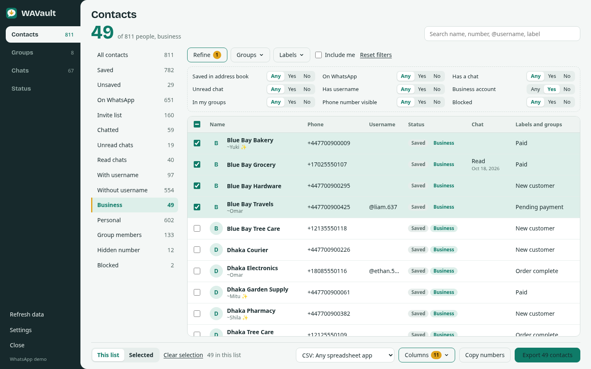

WAVault
Export WhatsApp contacts, groups and chats
Free, open-source browser extension. Nothing leaves your computer.

ExcelCSVvCardGoogleOutlookPDF
Free, open-source browser extension. Nothing leaves your computer.
